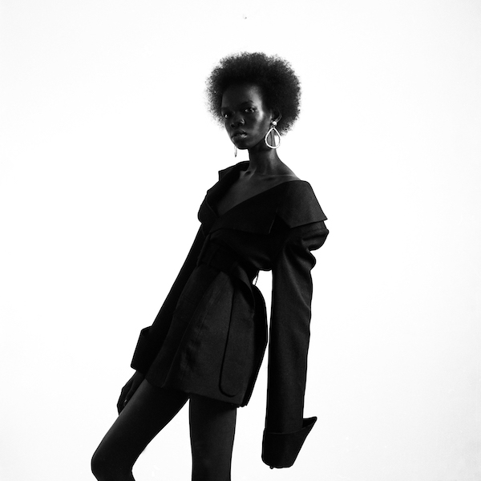

Creative Direction & Photography: Mena Assad
Models:
Adhar Abiam
Dimitri Fedosov
Mariam Abdallah
Color shot on Portra 400 & Portra 800
Black & White shot on Ilford Delta 400
Scanned at The Darkroom Cairo
Shot on a Thursday is a series of images shot and developed exclusively on Thursdays.
I like to dedicate Thursdays to creative indulgences and experimentations.
Shot on a Thursday is about enjoying photography at its most raw form, just picking up the camera and shooting.
The name is inspired by one of my favorite nursery rhymes, Solomon Grundy:
‘Solomon Grundy,
Born on a Monday,
Christened on Tuesday,
Married on Wednesday,
Took ill on Thursday,
Grew worse on Friday,
Died on Saturday,
Buried on Sunday,
That was the end,
Of Solomon Grundy.’